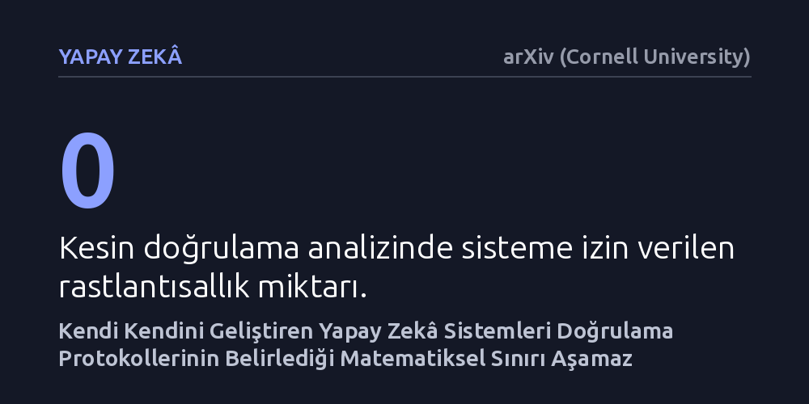

YAPAY-ZEKA · arXiv (Cornell University) · 2026-10-11
Çalışma, kendi kendini geliştiren yapay zekâ ajanlarının performans artış mekanizmalarını ve sınırlarını hesaplamalı karmaşıklık kuramıyla inceledi. Sabit bir doğrulama protokolü altında çalışan özyinelemeli sistemlerin problem çözme sınırlarını aşamadığı ve başarının doğrulama kaynaklarına bağımlı kaldığı kanıtlandı.
Bir yapay zekânın test skorundaki artışın gerçek bir yetenek kazanımı mı yoksa yalnızca daha uzun arama yapmanın sonucu mu olduğunu matematiksel olarak ayırt etmeyi sağlar.

Yapay zekâ sistemlerinin problem çözerken daha fazla işlem yapması veya dış araçlardan destek alması her geçen gün yaygınlaşıyor. Bir yapay zekâ ajanı belirli bir sınavda ya da kıyaslama testinde daha yüksek puan aldığında, bunu genellikle modelin daha yetenekli hale geldiği şeklinde yorumluyoruz. Oysa alınan yüksek bir skor, sistemin gerçekten niteliksel olarak yeni problem türlerini çözebildiğini mi, yoksa sadece arama süresini uzatarak çözüme tesadüfen mi ulaştığını tek başına ortaya koyamaz.
Bu belirsizlik, özellikle kendi kodunu ya da karar alma süreçlerini yinelemeli olarak güncelleyen sistemlerde ciddi bir yanılsama yaratır. Bir ajanın arama adımlarını artırması ile temel mantıksal yeteneğini geliştirmesi arasındaki farkı ayrıştıramazsak, arama uzayını kaba kuvvetle tarayan yöntemleri gerçek bir akıl yürütme ilerlemesi sanabiliriz. Bu nedenle sistemlerin performans artışını sadece puanlarla değil, arkasındaki matematiksel doğrulama mekanizmalarıyla değerlendirmek gerekir.
Araştırmacı, bu kavram kargaşasını çözmek amacıyla bilgisayar biliminin hesaplamalı karmaşıklık kuramına ve biçimsel dil teorisine başvuruyor. Geliştirilen çerçevede, yapay zekâ ajanının ürettiği çözümler ve bu çözümleri sınayan doğrulayıcı sistemler adım adım inceleniyor. Model; sistemin kabul edebileceği işlem kayıtlarını, polinom zaman sınırlarını ve gizli rastlantısallık içeren uç kontrol mekanizmalarını biçimsel olarak tanımlıyor.
Analiz kapsamında, sıfır rastlantısallık içeren kesin doğrulayıcılar ile olasılıksal kontroller yapan rastlantısal doğrulayıcılar ayrı karmaşıklık sınıflarına yerleştiriliyor. Sistemin varsayılan araçlarla ulaştığı yerel kapasite ile arayüzün sunduğu tüm dış destekleri kapsayan kapanış sınırı birbirinden ayrılıyor. Böylece bir yapay zekânın arama süresini uzatmasının getirdiği başarı ile sistemin doğrulama gücündeki gerçek değişimler kuramsal olarak birbirinden yalıtılıyor.
Çalışmanın ortaya koyduğu en çarpıcı sonuç, kendi kendini geliştiren yapay zekâ sistemlerinin teorik tavanına ilişkindir. Sağlam bir yorumlayıcı ve sabit bir doğrulama protokolü altında kendi kodunu veya mimarisini yinelemeli olarak değiştiren bir ajan, başlangıçtaki doğrulama sınıfının sınırlarını aşamamaktadır. Başka bir deyişle, sistem ne kadar çok kendi üzerinde değişiklik yaparsa yapsın, doğrulayıcısının denetleyebileceği problem sınırlarının ötesine geçemez.
Araştırma ayrıca çoğunluk oylaması gibi bağımsız güçlendirme yöntemlerinin geçerli dil sınırlarını koruduğunu, buna karşın rastgele dizilimler üzerinden varoluşsal kabullere başvurmanın yanlış çözümleri doğruymuş gibi kabul edebileceğini gösteriyor. Oluşturulan özel sentez aileleri, arama başarısındaki sınırsız artışların aslında sistemin kabul ettiği dil kümesini değiştirmediğini kanıtlıyor.
Bu bulgular, yapay zekânın 'kendi kendini sürekli geliştirerek kontrolsüz biçimde süper zekâya ulaşacağı' yönündeki popüler beklentilere gerçekçi ve soğukkanlı bir sınır çiziyor. Bir yapay zekâ ajanının gerçek gücünü belirleyen unsur, kaç farklı adayı deneyip tarayabildiği değil; ortaya çıkan çözümün doğruluğunu hangi kaynaklarla kanıtlayabildiğidir. Doğrulama kapasitesini genişletmeden yalnızca arama süresini uzatmak, çözülebilecek temel problem türlerini zenginleştirmez.
Sonuç olarak çalışma, yapay zekâda öz-gelişim iddialarını sıkı kurallara bağlıyor. Bir sistemin gerçekten geliştiğini savunabilmek için; çözümlerin doğruluğu, kabul edilebilir kanıt sınırları, harcanan doğrulama kaynakları ve seçim hataları açık biçimde belgelenmelidir. Bu yaklaşım, yapay zekâ alanındaki ilerlemelerin abartılardan arındırılarak sağlam bir matematiksel zeminde anlaşılmasına katkı sağlıyor.